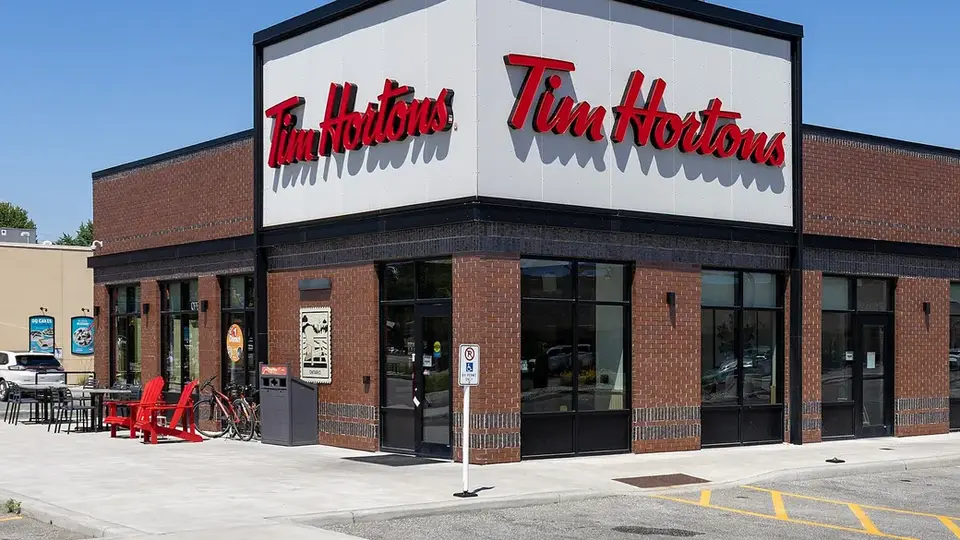

Unofficial fan guide - not affiliated with Tim Hortons
Canadian prices side by side, caffeine per dollar, taste, menu size and cup sizes, and which chain to pick for your usual order.
Full Menu / Blog / Tim Hortons vs Starbucks

Tim Hortons is cheaper and faster, and it has donuts and a bigger hot-food lineup. Starbucks has stronger coffee, many more drink options and better seating. In Canada a medium Tims coffee costs $1.83, and a Starbucks Grande Pike Place costs about $2.65 to $3.45.
| Tim Hortons | Starbucks | |
|---|---|---|
| Founded | 1964, Hamilton, Ontario | 1971, Seattle (Pike Place Market) |
| Stores in Canada | About 3,900 | About 1,400 |
| Stores worldwide | 6,209 | About 40,000 |
| Brewed coffee price (Canada) | $1.59 small to $2.35 XL | About $2.65–$3.45 Grande |
| Latte price | $3.19 small to $4.19 large | About $5.25–$5.95 Grande |
| Cup sizes | Small 10 oz, Medium 14 oz, Large 20 oz, XL 24 oz | Short 8 oz, Tall 12 oz, Grande 16 oz, Venti 20 oz hot |
| Caffeine, mid-size brewed | About 205 mg (Medium) | About 310 mg (Grande Pike Place) |
| Roast style | Mild, medium roast | Darker, bolder roast |
| Flavour syrups | 3 basics: vanilla, caramel, chocolate | About two dozen syrups and sauces |
| Donuts | Yes, plus Timbits | No |
| Best for | Price, speed, breakfast | Espresso, custom drinks, sitting in |
Tim Hortons prices were checked against the Tim Hortons app on 26 September 2026. Starbucks Canada doesn't post prices online, so the Starbucks numbers are ranges from four menu trackers updated between July and September 2026. They change by store and province.
Tim Hortons is cheaper for almost everything you can order at both places. How much cheaper depends on the drink. The gap is around a dollar on brewed coffee, and it reaches $2 to $3 once you move to lattes and blended drinks.
A medium Tim Hortons brewed coffee is 14 oz and costs $1.83. That works out to about 13 cents per ounce. A Starbucks Grande Pike Place Roast is 16 oz. At the middle of the tracker range (about $2.95), it works out to around 18 cents per ounce.
So Starbucks gives you 2 more ounces and charges about a dollar more for them. If you size up at Tims, an XL is 24 oz for $2.35, which is still cheaper than a Grande that's 8 oz smaller.
Espresso drinks show the biggest gap. A medium Tim Hortons latte or cappuccino costs $3.69, and a large is $4.19. A Grande Caffè Latte at Starbucks runs about $5.25 to $5.95, and a Grande Cappuccino costs about the same.
Cold drinks follow the same pattern. Tims Original Cold Brew is $2.49 to $3.49 depending on size, while a Grande Starbucks Cold Brew is about $4.95 to $5.75. A medium Original Iced Capp costs $3.79. Its closest Starbucks match, the Grande Caramel Frappuccino, is about $6.35 to $7.85. Our Iced Capp vs Frappuccino guide compares the two drinks in detail.
Here's a typical weekday order at each chain: a mid-size brewed coffee and a breakfast sandwich.
| Order | Tim Hortons | Starbucks |
|---|---|---|
| Mid-size brewed coffee | $1.83 (Medium) | ~$2.95 (Grande) |
| Breakfast sandwich | $4.49 (Bacon Breakfast Sandwich) | ~$4.95–$7.15 |
| Total | $6.32 | ~$7.90–$10.10 |
| Coffee only, every day for a year | $668 | ~$1,077 |
If you buy just one brewed coffee a day, switching from a Grande to a Tims Medium saves about $400 a year. You'd save more on lattes. These totals are before tax, and app offers at either chain can change them.
Neither one wins outright. It depends on what you like. Starbucks roasts its beans darker, so its coffee tastes bold and roasty, and some people find it bitter. Tim Hortons coffee is a milder medium roast. It's smooth, a little sweet, and easy to drink all day.
Both chains use 100% Arabica beans. Tim Hortons keeps a short list of blends: Original Blend, Dark Roast and decaf. Its beans mostly come from Central and South America. Starbucks buys from Latin America, Africa and Asia-Pacific. It sells several house blends and single-origin coffees, and Pike Place Roast is its everyday brewed coffee.
The roast also changes how a drink tastes once you add milk. Starbucks espresso still tastes like coffee under milk and syrup. A Tims latte is softer, and the milk takes over more. If you drink your coffee black or as a Double Double, the milder Tims blend is easier to drink. For a latte or flat white, most people find Starbucks tastes better.
Starbucks brewed coffee is much stronger. A Grande Pike Place Roast has about 310 mg of caffeine. A Tim Hortons Medium has about 205 mg, and even a Tims XL (about 330 mg) only just passes a Grande. Tim Hortons doesn't publish caffeine numbers, so the Tims figures are third-party estimates.
Per dollar, though, they're almost even. At the prices above, a Tims Medium gives you about 112 mg of caffeine per dollar. A Grande Pike Place gives you about 105 mg. Starbucks gets you there in fewer sips, but it doesn't give you more caffeine for your money.
Tim Hortons drinks are often sweeter. A Tasting Table comparison worked out sugar per 12 oz. It found about 43 g in a Tims hot chocolate and about 22.5 g at Starbucks. For an Iced Capp versus a Caramel Frappuccino, it found 74 g versus about 29 g. Tasting Table used U.S. menus, and its numbers are estimates, so treat them as rough. It's still worth knowing if you're watching sugar.
Starbucks has the bigger drink menu, and Tim Hortons has more of the food people come in for. That split is the main difference between the two chains. Starbucks is built around custom drinks. Tims is built around coffee and something to eat.
Tasting Table counted 39 drink categories at Starbucks and 29 at Tim Hortons. The bigger gap is in how much you can change a drink. Starbucks has about two dozen syrups and sauces, and you can change the shots, cold foam, milk, toppings and temperature. Tim Hortons has three basic flavours (vanilla, caramel and chocolate), a few milk choices, and extra espresso shots.
This matters if you can't have dairy or sugar. Starbucks lets you swap almost any part of a drink. At Tims, people tend to order by habit, like a Double Double (two creams, two sugars) or a French Vanilla.
Tim Hortons sells donuts and Starbucks doesn't. Tims lists dozens of donuts in its nutrition guide and usually has about ten flavours in a store, plus Timbits at $3.19 for 10. It also sells breakfast sandwiches, wraps, hash browns, bagels, muffins and lunch wraps and bowls, mostly under $6.
Starbucks food is more of a café bakery case. It has croissants, loaves, cake pops, egg bites, paninis and protein boxes. It costs more, too. A butter croissant is about $3.75 to $4.95, and Tims sells a plain croissant for $2.29. Starbucks has more choices for a lighter or protein-heavy snack. Tims is better if you want a hot breakfast fast.
Tim Hortons uses plain names: small, medium, large and extra large (10, 14, 20 and 24 oz). Starbucks uses Short, Tall, Grande and Venti (8, 12, 16 and 20 oz for hot drinks). The cold Venti is 24 oz, and the Trenta is about 30 oz and only for some iced drinks.
The names don't match up neatly. A Tims Medium is 2 oz smaller than a Grande, and a Tims Large equals a hot Venti. Compare by ounces, not by name.
Tim Hortons is faster. It's built around the drive-thru, while Starbucks is set up for sitting in. Tasting Table reported an average U.S. Tim Hortons drive-thru time of about 3 minutes 23 seconds. It reported about 4 minutes 44 seconds at Starbucks, which has said it wants to get under 4 minutes.
In Canada, you're also much more likely to find a Tims nearby. There are about 3,900 Tim Hortons and about 1,400 Starbucks. Worldwide it's the other way around: Starbucks has about 40,000 stores in roughly 80 countries, and Tim Hortons has 6,209. Starbucks cafés have more seating, Wi-Fi and outlets, so they're the better spot to work or meet someone. Tims dining rooms feel more like a fast-food restaurant. People eat quickly and leave.
Both chains have a free app. With Tims Rewards and Starbucks Rewards, you earn points on purchases and use them for free food and drinks. Starbucks has more ways to earn bonus points, like challenges, Bonus Star days and partner links such as Aeroplan. The Tims app is simpler, and you can use it at almost every Tim Hortons in the country.
The earn rates and reward costs change often. Check the current numbers in each app before deciding which one gives you more back. For Tims, our Tim Hortons app guide covers how the points work right now.
Pick Tim Hortons if you mostly buy brewed coffee, want breakfast with it, use the drive-thru, or are buying for a group. The savings add up over a year. Pick Starbucks if you drink lattes or iced espresso, need dairy-free or sugar-free options, or want somewhere to sit.
Plenty of Canadians use both: Tims for the morning commute, Starbucks for a meeting or a treat.
Yes. Tim Hortons is cheaper for every like-for-like drink and food item in this comparison. A medium Tims brewed coffee costs $1.83, and a Starbucks Grande is about $2.65 to $3.45. On lattes and blended drinks, the difference is $2 or more.
Yes, per cup. A Starbucks Grande Pike Place has about 310 mg of caffeine, and a Tims Medium has about 205 mg. Per dollar, the two come out almost even.
Starbucks runs a more complex operation. It has a bigger drink menu, many more custom options, more staff time per drink, and cafés designed for sitting in. Tim Hortons keeps prices low with a simpler menu, high volume and a drive-thru focus.
The Iced Capp is Tims' closest match. It's a frozen, blended coffee drink that's thinner and more coffee-forward than a Frappuccino. A medium Original Iced Capp costs $3.79, about half the price of a Grande Caramel Frappuccino.
A Tim Hortons medium is 14 oz, and a Starbucks Grande is 16 oz. The Tims large (20 oz) is the same size as a hot Starbucks Venti. The Tims extra large is 24 oz.
No. Starbucks has no donuts in its bakery case. It sells croissants, loaves, muffins, scones and cake pops instead. Donuts and Timbits are one of the main reasons people choose Tim Hortons.
Starbucks is usually better. Most Starbucks cafés have more seating, Wi-Fi and outlets, and nobody minds if you stay a while. Tim Hortons is built for quick visits and drive-thru orders.
Black coffee is about the same at both. Plain brewed coffee has almost no calories either way. The difference comes from what you add. Tims drinks like the Iced Capp and hot chocolate usually have more sugar, while Starbucks lets you choose sugar-free syrups and other milks.
Tim Hortons, by far. There are about 3,900 Tims in Canada and about 1,400 Starbucks. Starbucks is much bigger worldwide, with about 40,000 stores to Tim Hortons' 6,209.
Most coffee reviewers rate Starbucks espresso drinks higher. Starbucks also buys from more regions and sells more single-origin coffee. Quality is still partly taste, though. Many Canadians prefer the smoother, milder Tims brewed coffee to Starbucks' darker roast.
No. The two chains are separate companies. Tim Hortons is owned by Restaurant Brands International, and Starbucks is its own company, so each one's gift cards and rewards only work at its own stores. You can check a Tims gift card balance here.
This is an independent, unofficial guide. It is not affiliated with, endorsed by, or sponsored by Tim Hortons, Restaurant Brands International or Starbucks. Tim Hortons prices are listed Canadian menu prices before tax, taken from our menu pages, and vary by location. Starbucks Canada does not publish prices online, so Starbucks prices are ranges from four third-party menu trackers (July to September 2026) and vary by store. Caffeine figures for Tim Hortons are third-party estimates; sugar, drink-category and drive-thru figures come from Tasting Table (May 2025, U.S. menus). See Sources.